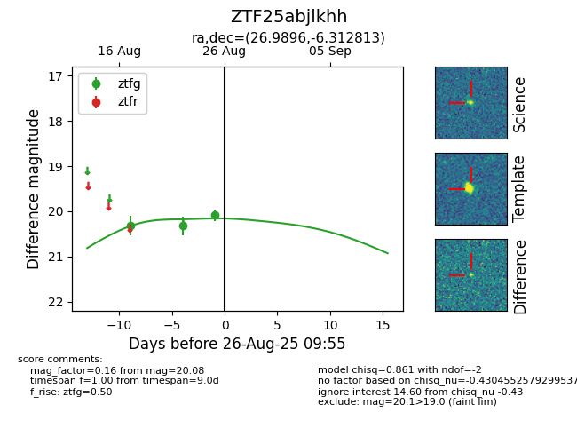

Target ZTF25abjlkhh at 2025-08-26 11:00, see:
FINK: fink-portal.org/ZTF25abjlkhh
Lasair: lasair-ztf.lsst.ac.uk/objects/ZTF25abjlkhh
ALeRCE: alerce.online/object/ZTF25abjlkhh
alt names
ZTF25abjlkhh (ztf,fink)
coordinates:
equatorial (ra, dec) = (26.9896,-6.31281)
galactic (l, b) = (158.3150,-65.22573)
photometry
last ztfg=20.08
3 ztfg detections
